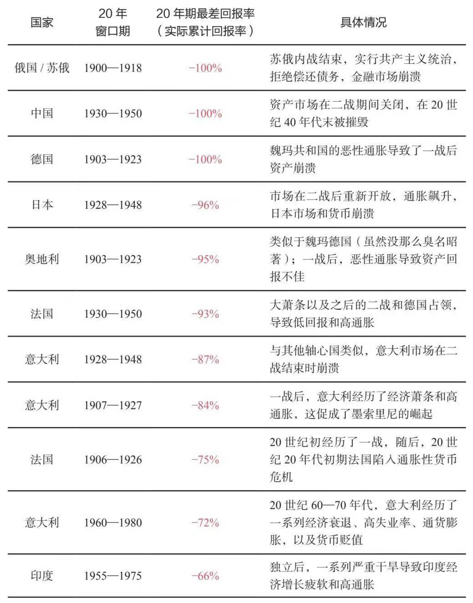

认知 01B
认知之旅 day27
【长周期认知补充（九）】
主要内容：
1.驱动市场的4个决定因素：经济增长、通胀、风险溢价和折现率；
2.三大投资风险：投资组合将无法提供支出所需的回报，投资组合将面临破产，以及很大一部分财富会被收走（例如，通过高税收）；
3.对于大周期的整体格局，大多数投资者看到的只是异常幸运的和平与繁荣时期，所以让我们一起回顾下那些萧条冲突的时期，以作警示；
4.回顾资本市场大周期，看金融财富与实物财富价值的此起彼伏。以及通过考察100年间债权收益率与现金利率的变动水平，来看当今投资。
参考内容部分节选整合自《原则：应对变化中的世界秩序》“第七章 从大周期的角度思考投资”。
（一）所有市场都是由以下4个决定因素驱动的：经济增长、通胀、风险溢价和折现率。
这是因为所有的投资都是以当前的一次性支付换取未来的支付。这些未来的现金支付取决于经济增长、通胀、风险溢价（即投资者相对于持有现金所愿承担的风险）和决定投资的当前价值（所谓的“现值”）的折现率。
这4个决定因素的变化驱动投资回报的变化。如果能知晓每个决定因素的未来形势，我就可以确定投资策略。这些认知告诉我如何把当前世界形势与当前市场形势联系起来，反之亦然。这些认知还告诉我如何平衡我的投资，使我的投资组合不受任何环境的影响，从而实现良好的分散化投资。
政府通过财政和货币政策影响这些因素。因此，政府目标与当前形势的相互作用成为周期的驱动因素。例如，如果经济增速过慢和通胀过低，央行就会创造更多的货币和信贷，由此产生购买力，拉动经济增长，通胀也会在一段时间后出现上升。如果央行限制货币和信贷供应，相反的情况就会发生：经济和通胀双双放缓。
为了影响市场回报和经济形势，中央政府与央行的职责有所不同。中央政府可以征税和支出，其决定政府资金的来源和去向，但不能创造货币和信贷。央行可以创造货币和信贷，但不能决定货币和信贷是否流入实体经济。中央政府和央行的这些行动影响商品、服务和投资资产的买卖，推动它们的价格上涨或下跌。
在我看来，每项投资都以自身的方式反映了这些驱动因素，从未来现金流的角度来看，这是合乎逻辑的。每一项投资资产都是一个投资组合的组成部分，而投资者面临的挑战是，如何根据这些驱动因素妥善地构建投资组合。例如，当经济增速高于预期时，在其他条件不变的情况下，股票价格将会上涨；而当经济增速和通胀率高于预期时，债券价格将会下跌。我的目标是，将这些基本因素纳入投资组合的战略决策中，基于当前和未来的世界形势（影响这4个决定因素），构建具有良好分散性和战术倾斜的投资组合。这些基本因素适用于国家、环境偏好、单个行业和公司等不同层面。下图显示将这一概念用于均衡配置投资组合的情况。通过这个视角，我可以考察当前形势的历史、市场的历史以及投资组合的表现。
（二）投资风险是无法赚取足够的钱来满足需求。大多数投资者面临的三大风险是，投资组合将无法提供支出所需的回报，投资组合将面临破产，以及很大一部分财富会被收走（例如，通过高税收）。
虽然前两种风险听起来类似，但实际上是不同的。因为有一种可能性是，虽然平均回报高于所需水平，但一个或多个时期出现了毁灭性的大幅亏损。
（三）从投资者的角度来看大周期的整体格局：大多数人看到的只是异常幸运的繁荣时期。
我的方法与大多数投资者不同，这主要有两个原因。首先，大多数投资者不会探究历史上的类似时期，他们认为历史和以往投资回报与自己基本上无关。其次，他们不会通过我刚才描述的视角来思考投资回报。我认为，这些视野给我和桥水公司带来了竞争优势，但采纳与否由你决定。
大多数投资者根据自己一生的经历做出预期。少数勤勉的投资者会回顾历史，查究20世纪50年代或60年代的决策规则。在我认识的投资者和高层经济决策者中（我认识很多出色的投资者和决策者），没有人深刻理解历史上发生的情况及其原因。大多数关注长期回报的投资者都认为，美国和英国的情况具有代表性（这两个国家均在两次世界大战中获胜）。这是因为二战中幸存下来的股市和债市寥寥无几，但这些国家和时期并不具有代表性，因为它们存在生存性偏好。如果你只考察美国和英国的回报，那么你只能看到异常幸运的国家的异常和平与繁荣时期，这是整个大周期的最佳阶段。忽视其他国家和其他时期将失之偏颇。
根据对大周期的理解进行逻辑推理，把视线往前推几十年，考察一下不同国家的不同情况，我们会得到极其不同的见解。接下来，我将讲述这些情况，因为我认为，你也应当有这样的历史视野。
在1945年之前的35年里，大多数国家的几乎所有财富都被摧毁或者没收。一些国家的许多资本家被杀害或监禁，因为当资本市场、资本主义以及旧秩序的其他方面失灵时，人们对资本家感到愤恨。我们从过去几个世纪的历史中可以看到，这种极端繁荣/极端萧条的周期经常发生。从资本和资本主义繁荣时期的正常周期（例如第二次工业革命时期、19世纪末20世纪初的镀金时代）进入过渡时期（例如，1900—1910年，内部冲突日益激化，国际财富和权力冲突不断升级），再进入严重冲突和经济萧条时期（类似于1910—1945年的情况）。我们还可以依据兴衰时期背后的因果关系推断，当前美国的情况更接近于周期后期的衰落和重组阶段，而不是周期早期的繁荣和建设阶段。
为了进行宏观分析，我想象自己回到1900年，考察从那以后，我的投资在每10年里的表现。为了进行这些研究，我选择了1900年以来的10个大国，略去了不太发达的国家（它们更容易出现不良结果）。事实上，所有这些国家都曾经是或可能成为伟大而富有的帝国。它们都是理想的投资之地，特别是如果投资者想要构建一个分散化投资组合的话。
在这10个国家中，有7个国家至少经历过一次几乎所有财富都全部消失。即使是那些没有经历过财富全部消失的国家，也经历了几个糟糕的10年，其资产回报几乎摧毁了它们的财务。另外，有两个强大的发达国家（德国和日本，在某些时期，人们很容易押注于它们会成为赢家），在两次世界大战中损失了几乎所有财富和许多生命。我看到许多其他国家也有类似的结果。美国和英国（以及其他一些国家）是少有的成功案例，但即便是这些国家也经历了巨额财富损失时期。
如果我没有考察1945年世界新秩序开始之前的这些投资回报，我就不会了解到这些毁灭性时期。如果我没有回顾500年前的世界历史，我就不会看到这种情况如何在世界各国反复发生。
下表详细显示主要国家中最糟糕的投资案例。美国没有出现在下表中，因为在投资上，美国不属于最糟糕的国家。美国、加拿大和澳大利亚是仅有的没有经历过持续损失期的国家。


我自然会思考，如果我生活在这些时期，那么我会如何应对这些情况。可以肯定的是，即便看到上述迹象，我也没有信心预测到如此糟糕的结果，如前所述，在10个国家中，有7个国家的财富全部消失。生活在20世纪第一个十年早期的人，即使往回看几十年，也预料不到这些事件的到来，因为从19世纪下半叶的形势来看，人们有很多理由感到乐观。
当今的人们往往认为，在一战爆发前的几年，战争的到来一定很容易预见到，但事实并非如此。在一战前的大约50年里，世界主要大国几乎没有发生冲突，世界经历了最伟大的创新和前所未有的生产率增长，由此创造了巨大的财富和繁荣。在一战之前的50年里，全球出口增长了好几倍，全球化达到新的高峰，各国之间的往来空前密切。美国、法国、德国、日本和奥匈帝国迅速崛起，技术进步突飞猛进。英国仍然在世界上占据主导地位。俄国正在迅速实现工业化。在上表（最差的投资经历）所示的国家中，只有中国明显处于下行态势。当时，欧洲大国之间的紧密联盟被视为维护和平与权力平衡的一种手段。1900年之前，除了财富差距和怨恨情绪日益加剧、债务变得极其庞大外，形势似乎一派大好。
1900—1914年，贫富悬殊和债务问题恶化，国际紧张局势加剧，导致我刚描述过的最差投资回报时期的到来。
但这比仅仅是糟糕的投资回报更糟糕。
此外，国家实施财富没收、强制性税收、资本管制和关闭市场等举措对财富产生了巨大的影响。如今，大多数投资者对这些事件并不了解，而且认为不太可信，因为即便往回看几十年，也了解不到这些情况。最严重的财富没收案例自然出现在以下时期：在经济恶化或发生战争的同时，贫富差距巨大和内部财富斗争激烈。
即使是战胜国（比如美国在两次世界大战中都是最大的赢家）的幸运投资者，也还会面临两个不利因素：市场时机和税收。
在大势不好时，大多数投资者在股价接近低点时卖出，因为他们需要现金，也出于恐慌。同样，当形势大好时，投资者通常在股价接近高点时买入，因为他们有充足的资金，蜂拥投入狂热的牛市中。因此，大多数投资者的回报率低于市场回报率。
（四）回顾资本市场大周期
我在稍前解释了典型债务和资本市场大周期的运行机制。需要强调的是，在周期的上行阶段，债务增加，金融财富和负债增速超过实物财富增速，最终，债务人无法兑现对未来支付的承诺（如现金、债券和股票）。这导致了“银行挤兑”型债务问题的出现。在这种情况下，央行不得不印钞，设法缓解债务违约和股市下跌的局面。央行印钞将导致货币贬值，使金融财富价值相对于实物财富价值下跌，直到金融资产的实际价值（经通胀调整后）低于实物资产的水平。这时，周期重新开始。这是一个非常简化的描述，但情况大致如此。在周期的下行阶段，金融资产相对于实物资产的实际回报处于负值，同时经济陷入困境，这是周期的反资本、反资本主义阶段，这种状况一直持续，直到到达另一个极端。
这个周期反映在下面两图中。第一张图显示整体金融资产价值与整体实物资产价值的比较，第二张图显示资金（即现金）的实际回报率。我使用美国数据而不是全球数据，因为前者是1900年以来最具连贯性的数据。由此可见，当金融财富大大超过实物财富时，走势就会逆转，金融财富（特别是现金和债券等债务资产）的实际回报将会十分糟糕。其原因有二：首先，政府只有让利率和债权人的回报率处于低位且不佳，才能为负债过多的债务人提供救济；其次，政府设法通过继续增加债务来刺激经济增长。这是长期债务周期后期阶段的典型做法。在这个阶段，政府将增印的货币用于减轻债务负担，创造新的债务以增加购买力。这使得货币相对于其他财富贮藏手段及商品和服务贬值。最终，金融资产的价值降至低于实物资产的价值，就会达到另一个极端，促使走势发生逆转，回归和平与繁荣，周期进入上升阶段，金融资产重新获取出色的实际回报。
如前所述，在货币贬值期间，硬货币和硬资产相对于现金的价值上升。例如，下图显示当典型的60/40股票/债券投资组合的价值下跌时，金价就会上涨。我并不是说黄金投资的好坏。我只是在描述经济和市场机制，以及这些机制如何反映在过去的市场走势和投资回报中，从而分享我对历史、未来可能性和原因的分析。
投资者需要经常自问的一个重要问题是，你得到的利息金额是否足以弥补你所面临的货币贬值风险。
典型的债务/货币/资本市场大周期在不同的国家和不同的时期反复出现，它们反映在上图中，也表现在(1)实物/有形货币和实物/有形财富的相对价值中，以及(2)金融货币和金融财富的相对价值中。金融货币和金融财富只有在获得有真正价值（内在价值）的实物货币和实物财富时才有价值。
这些周期的运行方式：在上升阶段，金融货币和金融财富（如创造的债务和股权资产）的数量超过实物货币和实物财富（即前者可以要求兑换的货币和财富）的数量。这是因为(a)对创造和出售金融资产的资本家来说，这些业务有利可图；(b)增加货币、信贷和其他资本市场资产是决策者创造繁荣的有效途径，因为这会给需求提供资金；(c)这种做法产生的一种错觉是，人们变得更富有，因为当货币和债务资产的价值下降时，金融投资的账面价值上升。通过这种方式，中央政府和中央银行总是创造出更多的实物货币和实物财富的债权，而这些债权永远无法兑换成实物财富和实物货币。
在周期的上升阶段，股票、债券和其他投资资产会随着利率的下降而上升，因为在其他条件不变的情况下，利率下降会导致资产价格上升。此外，向金融体系注入更多资金会增加对金融资产的需求，从而降低风险溢价。由于利率处于低位，而且更多资金进入金融体系，这些投资的回报率提升，它们显得更有吸引力，但与此同时，利率和金融资产的未来预期回报率都在下降。未偿债权相对于可兑换实物越多，风险就越大。这些风险应该由更高的利率来补偿，但情况通常不是这样。因为当时的形势似乎大好，人们对债务和资本市场危机的记忆已经淡去。
此前显示的周期图不包括一些利率，无法完整地反映实际情况。下图显示1900年以来的利率，即在我撰写本书时，美国、欧洲和日本的（经通胀调整后的）实际债券收益率、（未经通胀调整的）名义债券收益率，以及实际和名义现金利率。由此可见，这些指标的以往水平比现在高得多，现在处于极低水平。在我撰写本书时，在储备货币国家，政府的实际债券收益率接近历史最低水平，名义债券收益率处于零附近，也接近历史最低水平。如图所示，实际现金利率甚至更低，但不像1930—1945年和1915—1920年大规模货币化时期的负值水平那么低。名义现金利率接近历史最低水平。
这些情况对投资有何影响？投资的目的是以一种财富贮藏手段储存资金，以便今后将其转化成购买力。投资是一次性地支付未来的款项。我们不妨考察一下，这种交易在我撰写本书时的情形。如果你今天投资100美元，那么你需要等多少年才能收回本金，然后开始获得超出本金的回报？在美国，如果你投资日本、中国和欧洲的债券，那么你可能分别需要等待大约45年、150年和30年，才能拿回本金（你的名义回报可能很低，甚至为零）。在我撰写本书时，欧洲的名义利率为负，在这种情况下，你可能永远也拿不回本金了。因为你试图储存购买力，所以你必须考虑通胀因素。在我撰写本书时，如果你投资于美国和欧洲，那么你可能永远无法收回你的购买力（在日本，你需要250年以上）。事实上，在这些实际利率为负的国家，未来的购买力几乎肯定会大幅缩水。与其得到低于通胀的回报，为什么不去购买那些回报将与通胀持平甚至更高的东西（任何东西）？我看到很多投资机遇，我预期这些投资将获得比通胀高得多的回报。下图从名义和实际水平显示美国的债券和现金取得回报所需的时间。如图所示，目前所需的时间处于历史最高水平，显然是长得出奇。